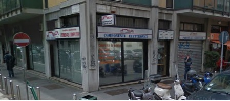
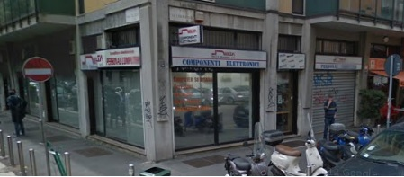
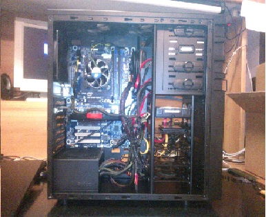
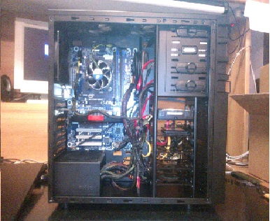
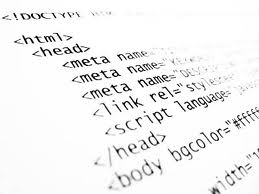
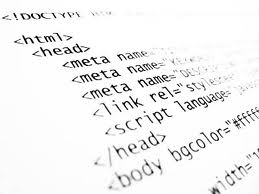

Io ho fatto lo stage presso l'azienda "Delta Elettronica" che si trova a Milano nella fermata della metro M2 "S.Agostino".
La Delta Elettronica è una azienda che si occupa di venta di componenti per macchinari industriali e anche per i computer,
si fanno riparazione Pc, sostituzione componenti, assemblaggio Pc.
Questa azienda lavora con aziende dentro l'italia e anche fuori dell'italia e per me è una grande azienda internazionale.

La Delta Elettronica è una azienda che si occupa di venta di componenti per macchinari industriali e anche per i computer,
si fanno riparazione Pc, sostituzione componenti, assemblaggio Pc.
Questa azienda lavora con aziende dentro l'italia e anche fuori dell'italia e per me è una grande azienda internazionale.

In questa azienda mi hanno accolto molto bene, mi sono trovato molto bene e ho imparato tante nuove cose che non sapevo
fare. Ho imparato a montare dei computer proprio dall'inizio, cercavo io stesso i componenti che servivano per farlo partire
e li montavo dentro le casse per poi chiudere e provare se funzionava tutto; dopo tutto questo dovevo installare il sistema
operativo (in particolare si usava di più Windows7) e poi dovevo caricare i driver o scaricarli online, anche fare gli
aggiornamenti, installare un antivirus e tutto quello che veninva richiesto dal cliente.
Assemblare Pc è stata la cosa che mi è piaciuta di più in questo stage.

fare. Ho imparato a montare dei computer proprio dall'inizio, cercavo io stesso i componenti che servivano per farlo partire
e li montavo dentro le casse per poi chiudere e provare se funzionava tutto; dopo tutto questo dovevo installare il sistema
operativo (in particolare si usava di più Windows7) e poi dovevo caricare i driver o scaricarli online, anche fare gli
aggiornamenti, installare un antivirus e tutto quello che veninva richiesto dal cliente.
Assemblare Pc è stata la cosa che mi è piaciuta di più in questo stage.

Mi sono trovato bene in questo stage e tutto quello che facevo e mi isegnavano mi è piaciuto ed era anche interessante pero in
particolare quello che mi faceva annoiare era che qualche volta rimanevo lì senza fare niente e poi le due ultime settimane
che ho fatto alla Delta Elettronica sono state pesantissime perchè ho lavorato un po' troppo però non in fine non è stato così
male stare due mesi a lavorare con questa azienda.
particolare quello che mi faceva annoiare era che qualche volta rimanevo lì senza fare niente e poi le due ultime settimane
che ho fatto alla Delta Elettronica sono state pesantissime perchè ho lavorato un po' troppo però non in fine non è stato così
male stare due mesi a lavorare con questa azienda.
Nella Delta Elettronica mi avrebbe piaciuto imparare e praticare i linguaggi di programmazione che abbiamo praticato e ancora
pratichiamo a scuola che io faccio ancora un po' di fatica a capirli però quello che ho fatto nel periodo passato alla Delta
Elettronica mi è bastato perchè veramente ho imparato tante cose che mi serviranno per il futuro e ho fatto anche nuove conoscenze.

pratichiamo a scuola che io faccio ancora un po' di fatica a capirli però quello che ho fatto nel periodo passato alla Delta
Elettronica mi è bastato perchè veramente ho imparato tante cose che mi serviranno per il futuro e ho fatto anche nuove conoscenze.
